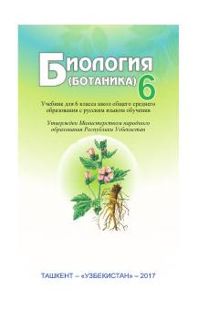

B66-sinf o'quvchilari uchun botanika fanidan asosiy darslik.
Mazkur darslik umumiy o'rta ta'lim maktablarining 6-sinfi uchun mo'ljallangan bo'lib, o'quvchilarni botanika fani, o'simliklar olami, ularning tuzilishi, hayot faoliyati va tabiatdagi ahamiyati bilan tanishtiradi. Kitobda o'simliklar hujayrasi, to'qimalari, vegetativ va generativ organlari hamda ularning evolyutsion rivojlanishi haqida batafsil ma'lumot berilgan.